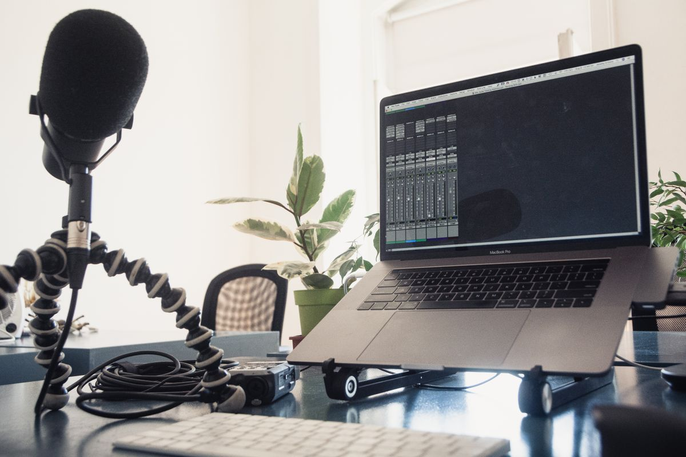

Pernah merasa jari sudah pegal padahal tugas baru setengah jalan? Atau ide di kepala mengalir deras tapi tangan tidak sempat mengejarnya? Kalau iya, ada satu fitur gratis di Google Docs yang mungkin belum pernah kamu coba: ketik pakai suara di Google Docs.
Namanya Dikte, atau Voice Typing. Kamu cukup bicara ke mikrofon, dan kata-katamu langsung berubah jadi teks di dokumen. Tanpa aplikasi tambahan, tanpa biaya, dan bahasa Indonesia didukung. Artikel ini menjelaskan cara mengaktifkannya di laptop dan HP, plus trik supaya hasilnya rapi, per Oktober 2026.
Kenapa dikte ini terasa seperti fitur berbayar
Mengetik dengan suara sering dikira butuh aplikasi khusus yang harus dibeli dulu. Padahal Google sudah menanamkan fitur ini di Google Docs, dan siapa pun yang punya akun Google bisa memakainya gratis. Syaratnya cuma tiga: browser yang didukung, mikrofon yang berfungsi, dan koneksi internet yang stabil, karena suara diproses secara online.
Fitur ini cocok buat draf pertama yang panjang, catatan rapat, atau tugas yang idenya sudah matang di kepala. Kamu bicara dulu, teksnya mengikuti, lalu rapikan belakangan. Buat yang jarinya cepat lelah atau sedang tidak bisa mengetik lama, ini jalan keluar yang nyata.
1. Cara mengaktifkan dikte di laptop
Di laptop, dikte tersedia di Google Docs lewat browser Chrome, Edge, atau Safari versi terbaru, menurut halaman bantuan resmi Google. Langkahnya begini:
- Buka docs.google.com di browser, lalu masuk dengan akun Google kamu.
- Buka dokumen yang sudah ada, atau buat dokumen baru.
- Klik menu Alat di bar atas, lalu pilih Dikte. Cara cepatnya, tekan Ctrl+Shift+S di keyboard.
- Kotak mikrofon akan muncul di sisi kiri layar. Klik menu bahasa di atas ikon mikrofon, lalu pilih Bahasa Indonesia.
- Klik ikon mikrofon sampai berubah merah, lalu mulai bicara dengan jelas dan kecepatan normal.
- Kalau sudah selesai, klik lagi ikon mikrofon untuk berhenti.
Saat pertama kali dipakai, browser biasanya meminta izin akses mikrofon. Pilih Izinkan supaya suaramu bisa ditangkap. Kalau izin ini ditolak, dikte tidak akan jalan meski ikon mikrofon sudah diklik.
2. Perintah suara yang bikin hasil dikte rapi
Dikte bukan cuma mengubah suara jadi teks. Kamu bisa mengatur tanda baca dan baris baru hanya dengan mengucapkannya. Ini perintah yang paling sering dipakai:
- Ucapkan "titik" untuk tanda titik, "koma" untuk tanda koma, dan "tanda tanya" untuk tanda tanya.
- Ucapkan "baris baru" untuk pindah ke baris berikutnya, dan "paragraf baru" untuk mulai paragraf baru.
Bicaralah dengan kalimat pendek dan jeda sebentar di tiap akhir kalimat. Mesin lebih gampang menangkap kalimat pendek yang jelas daripada kalimat panjang tanpa henti. Kalau ada kata yang salah, kamu tidak perlu mematikan mikrofon: pindahkan saja kursor ke kata itu, perbaiki, lalu lanjut bicara. Kata yang masih diragukan sistem biasanya bergaris bawah abu-abu; klik kanan kata itu untuk melihat saran pengganti.

3. Cara pakai di HP, tanpa laptop
Di HP, caranya sedikit berbeda. Aplikasi Google Docs di HP tidak punya menu Dikte seperti di laptop. Sebagai gantinya, kamu memakai tombol mikrofon yang ada di keyboard HP, misalnya Gboard yang biasanya sudah terpasang di HP Android.
- Buka aplikasi Google Docs, lalu buka dokumenmu.
- Ketuk kolom teks sampai keyboard muncul.
- Ketuk ikon mikrofon di keyboard, lalu mulai bicara.
- Teks akan masuk ke dokumen. Ketuk lagi ikon mikrofon untuk berhenti.
Pastikan izin mikrofon untuk keyboard sudah diberikan, dan bicara dekat dengan HP supaya suaramu tertangkap jelas. Di iPhone, tombol mikrofon juga ada di keyboard bawaan, jadi caranya sama.
4. Trik supaya hasil dikte tidak berantakan
Dikte yang rapi lebih banyak ditentukan cara bicara daripada alatnya. Cari ruangan yang tenang, jauh dari televisi atau suara orang lain. Kalau ada headset dengan mikrofon, pakai itu, karena suara yang ditangkap lebih bersih daripada mikrofon laptop yang jauh.
Jangan dikte sambil makan atau sambil berjalan di tempat ramai, karena suara tambahan ikut tertangkap dan berubah jadi kata yang tidak kamu maksud. Terakhir, selalu baca ulang hasil dikte sebelum dikirim atau dikumpulkan. Nama orang, nama tempat, dan istilah asing adalah yang paling sering meleset.
Batasan yang perlu kamu tahu
Dikte Google Docs butuh koneksi internet yang aktif, karena suara dikirim untuk diproses jadi teks. Tanpa internet, fitur ini tidak jalan. Di laptop, fitur ini juga cuma tersedia lewat browser, bukan aplikasi desktop, dan cuma di Chrome, Edge, atau Safari versi terbaru.
Satu hal soal privasi: suaramu diproses oleh layanan speech-to-text lewat browser, jadi jangan mendikte kata sandi, nomor rekening, atau informasi rahasia lain. Untuk dokumen biasa seperti tugas, catatan, dan draf tulisan, fitur ini aman dipakai sehari-hari.
Intinya
Ketik pakai suara di Google Docs itu gratis, sudah tersedia di akun Google kamu, dan mendukung bahasa Indonesia. Aktifkan lewat menu Alat lalu Dikte atau tekan Ctrl+Shift+S di laptop, atau pakai tombol mikrofon di keyboard HP. Bicara jelas, ucapkan tanda bacanya, lalu baca ulang hasilnya. Per Oktober 2026, ini cara paling gampang menulis panjang tanpa membuat jari pegal.
← Kembali ke Other